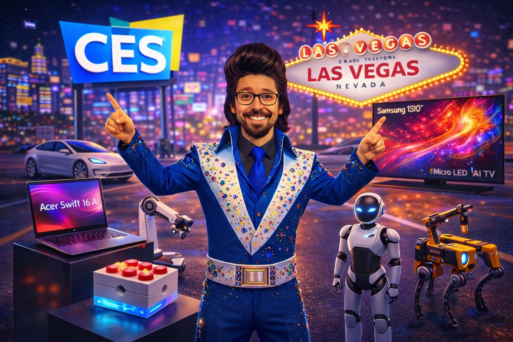

In the vast landscape of technological exhibitions, the Consumer Electronics Show (CES) in Las Vegas stands as a quiet testament to the evolution of our digital age. It’s a space where whispers of innovation gradually build into the hum of our everyday lives.
Amidst the dazzling displays and the clamor of new releases, there's a subtler narrative unfolding at CES. It's not about the latest gadget or the flashiest device, but a significant shift in how technology integrates into our lives. This year, the show wasn't simply a preview of what's to come; it was a reflection of how far we've come in embedding AI and robotics into the very fabric of our technology ecosystem.
This evolution is easy to miss amidst the spectacle of CES. Yet, it's these underlying changes that quietly shape the trajectory of our technological future, moving us toward systems that are inherently smarter and more autonomous.
Beneath the surface, AI is transitioning from a cloud-based phenomenon to a locally-embedded reality. New laptops, smartphones, and even vehicles are being equipped with processors designed specifically for AI tasks. This shift towards on-device AI processing marks a departure from reliance on cloud services, promising faster and more secure operations. It’s a subtle, yet profound change that enhances both performance and privacy.
In the realm of robotics, what was once experimental is now operational. Warehouse automation has moved beyond pilot phases, with real-world deployments in cleaning, food service, and delivery systems. The shift from concept to functionality indicates a maturing field, where robotics begins to assume roles traditionally filled by human labor.
Moreover, the emergence of 'AI PCs' signifies a new baseline for personal computing. No longer is AI an optional extra; it’s built into the core architecture of both Windows and Mac systems. This integration paves the way for more intuitive and responsive digital experiences, as computers become increasingly adept at anticipating user needs.
The implications of these changes are manifold. For the consumer, this means devices that can operate more independently, offering enhanced speed and privacy by processing data locally. It also signals a move towards more cohesive technological ecosystems, where disparate devices work in concert rather than in isolation.
For industries like logistics and food service, the operational deployment of robotics offers potential cost savings and efficiency gains. However, it also raises questions about the future of work and the roles humans will play in these increasingly automated environments. It’s a development that warrants careful consideration, balancing technological advancement with social impact.
Yet, it's important to recognize the limitations. While these advancements promise many benefits, they also highlight the growing complexity of our technological landscape. As systems become more integrated and autonomous, the challenge lies in ensuring they remain secure and accessible to all.
Looking ahead, the trends observed at CES suggest a future where AI and robotics are not just add-ons but foundational elements of our technological infrastructure. This quiet integration points towards a world where technology becomes more intuitive and seamless, blending into our environments rather than standing apart.
However, this trajectory also calls for vigilance. As technology becomes more embedded in our lives, the need for ethical oversight and inclusive design becomes ever more critical. It’s a path that requires not only innovation but also responsibility, ensuring that the benefits of these advancements are broadly shared.
Dr.WinMac explores the infrastructure and automation changes that affect everyone, explained without jargon.
Back to Blog